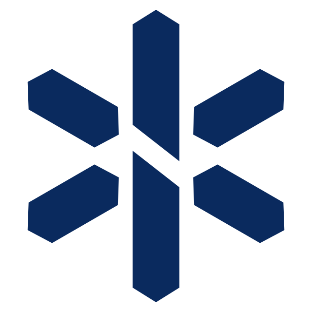

// Manual de marca · Versión 1 · 22 de noviembre de 2026
Nexarm se ve y habla así.
Nexarm es un producto de Neona Tech y usa su sistema visual: mismo isotipo, mismos colores y mismas tipografías. Esta página fija cómo se aplican al producto.
// 01 · Logotipo
El isotipo de Neona más la palabra NEXARM
 NEXARM
NEXARM
NEXARM- Palabra en Sora 800, mayúsculas, con espaciado de 0,06 em.
- «NEX» en blanco o azul. «ARM» siempre en cian.
- Espacio libre alrededor: el ancho de la letra N.
- Tamaño mínimo: 20 px de alto en pantalla.
Sí
- Sobre azul profundo, noche o blanco.
- Isotipo solo como ícono de pestaña o avatar.
No
- Inclinar, deformar o cambiar los colores.
- Ponerlo sobre fotos sin un velo oscuro.
// 02 · Color
Cuatro colores de marca y uno de aviso
#0A2A5EFondos, titulares sobre claro.#00A3E0Acción: botones, enlaces, «ARM».#00B386Solo para «ejecutado» y logros.#2E3440Texto sobre fondo claro.#04122BFondo de páginas y videos.#F5B700Solo para «pendiente».Un solo color de acción por pantalla. El verde y el ámbar comunican estado; no decoran.
// 03 · Tipografía
Tres familias, cada una con un oficio
Sora 600 a 800TítulosUna idea por título. Sin punto final en etiquetas.
IBM Plex Sans 400 a 600LecturaPárrafos, tablas, formularios y botones.
IBM Plex Mono 400 y 500// 01 · EtiquetaEtiquetas de sección, estados, código y cifras técnicas.
// 04 · Piezas
Etiquetas, estados y botones
Etiqueta de sección
// 05 · La pasarela
Dos barras, número de dos cifras, punto medio y nombre.
Estados
ejecutado pendiente denegado
Siempre en minúscula y en Plex Mono.
Botones
Acción principalSecundaria
Un botón cian por pantalla. Altura mínima de 48 px.
// 05 · Voz
Claro, concreto y comprobable
Decimos
- «El agente opera. La persona supervisa. El sistema impone las reglas.»
- «Diseñado conforme a ISO 9001, ISO/IEC 27001 e ISO/IEC 42001.»
- Cifras con su fecha y su fuente.
- Verbos de acción: aprueba, audita, suspende, revierte.
No decimos
- «Certificado ISO».
- «Revolucionario», «mágico», «100 % autónomo».
- Cifras sin fuente.
- Conversaciones reales de clientes como ejemplo.
// 06 · Imagen y video
Pantallas reales, fondo noche
- Las capturas de la consola usan datos ficticios y lo dicen.
- Toda imagen generada con IA lleva la nota «generado con IA».
- El video lleva el logotipo arriba a la izquierda y la etiqueta de sección a la derecha.
- Toda pieza pública cierra con razón social, NIT, privacidad y términos.